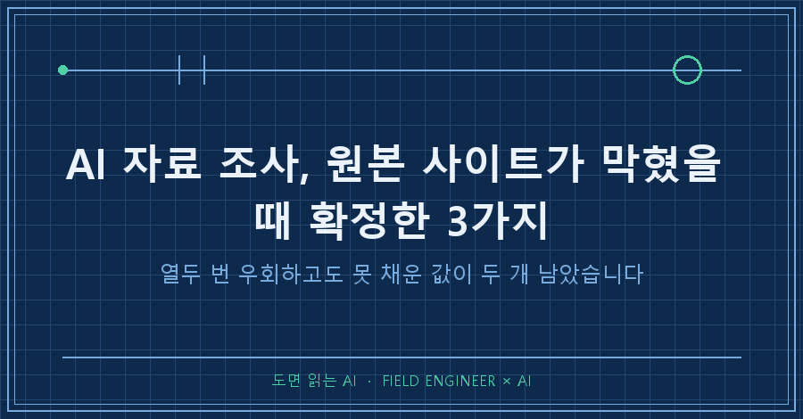
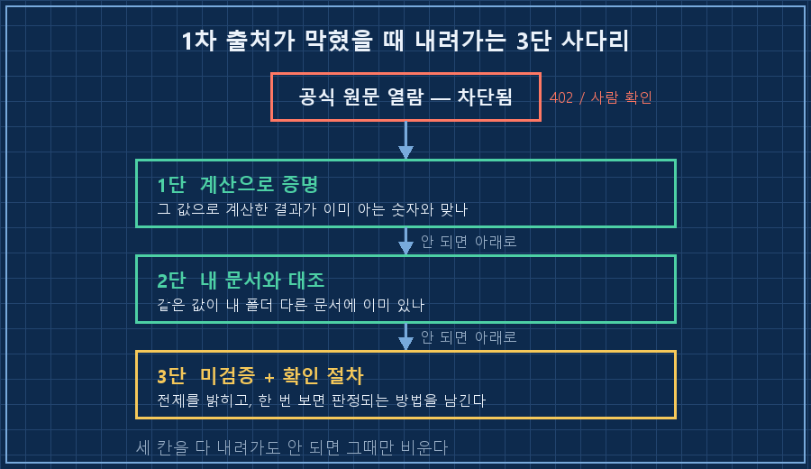
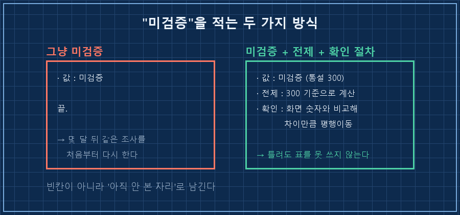
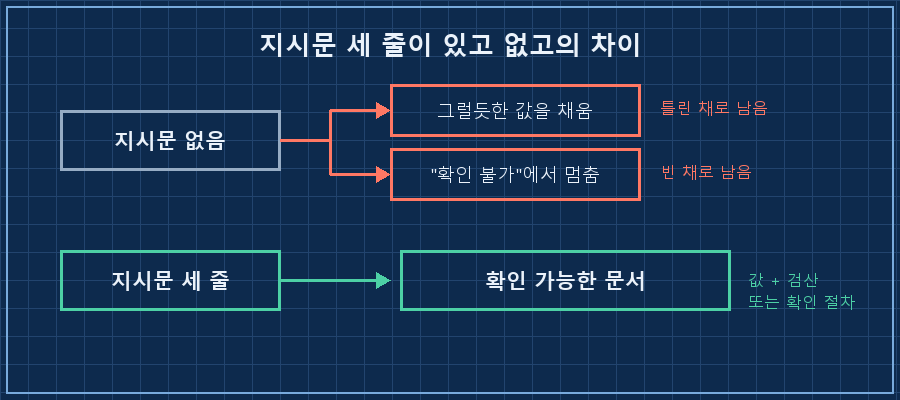

주말에 취미로 문서를 하나 만들면서 AI 자료 조사를 맡겨뒀어요. 다른 일 좀 하다 돌아왔는데, 진도가 이상하게 안 나가 있더라고요.
참고하려던 공식 위키가 아예 안 열렸습니다. 접속하면 402를 뱉거나, 사람인지 확인하라는 화면만 나왔어요.
먼저 결론부터 적을게요.
AI 자료 조사는 1차 출처가 막혔다고 거기서 끝나는 게 아닙니다. 원문을 직접 못 봐도 값이 맞는지 증명하는 길이 세 개 있어요. 계산으로 스스로 맞춰보기, 이미 내 폴더에 있는 다른 문서와 대조하기, 그래도 안 되면 "미검증"으로 적되 나중에 직접 확인할 절차를 붙여두기. 위에서부터 순서대로 내려갑니다.
그날 확정해야 했던 규칙은 여덟 개였고, 끝내 못 채운 값은 두 개였습니다.
1. 열두 번을 우회했는데 값이 여기저기 흩어져 있었어요
AI 자료 조사 기록을 세어보니 교차검색을 열두 번 돌렸더라고요.
공식 위키가 막힌 자리를 다른 언어 위키로, 커뮤니티 토론글로, 개인이 올려둔 공략 문서로 하나씩 메운 겁니다.
Fandom 위키가 402/CAPTCHA로 차단되어 우회 소스로 교차검증.
확정한 규칙 6가지문제는 그렇게 모은 값들의 출신이 제각각이라는 거였어요.
어떤 값은 다른 언어 위키에서, 어떤 값은 게시판 토론 한 줄에서 나왔습니다. 제일 결정적인 수치 하나는 개인이 예전에 올려둔 공략 문서 한 장에서 나왔고요.
여기서 "출처를 적어놨으니 됐다"고 넘어가면 안 됩니다.
출처 표기는 나중에 되짚기 위한 주소일 뿐이지, 그 값이 맞다는 증명이 아니거든요. 실제로 그날 적어둔 링크 중 몇 개는 지금도 안 열립니다.

2. 출처를 못 봐도 계산이 맞으면 확정입니다
전환점은 싱겁게 왔어요.
값 하나가 다른 값들과 산수로 엮이는 종류였거든요.
레벨이 오를 때마다 포인트를 3점씩 준다는 규칙이 있었습니다. 이게 맞는지 원문으로 확인은 못 했어요.
대신 이렇게 해봤습니다.
레벨업 1회 = 3점
최고 레벨 85 → 3 × 84 = 252점
+ 퀘스트 보상 약 30점
= 282점 ← 커뮤니티가 말하는 총 포인트와 일치3점이 아니라 2점이었다면 총합이 200점 근처로 나와서 애초에 안 맞습니다.
그래서 문서에는 이렇게만 적었어요.
> 만렙 85 = 3×84 = 252점 + 퀘스트 약 30점 = 282점, 공식치와 일치
출처를 못 열어도, 그 값으로 계산한 결과가 이미 알려진 다른 숫자와 맞으면 그건 확정입니다. 원문 열람은 값을 확인하는 여러 방법 중 하나일 뿐이에요.
같은 자리에서 두 번째 사다리도 한 칸 썼습니다. 새로 조사한 수치를 제 폴더에 이미 있던 다른 문서와 맞춰보는 거요. 그 대조에서 오래된 문서 하나가 틀린 값을 붙들고 있던 걸 잡았습니다. 이 얘기는 지난 글에서 한 번 했으니 여기서는 넘어갈게요.
3. 끝내 못 채운 값은 "확인하는 법"으로 바꿔 적었어요
그래도 두 개가 남았습니다. 계산으로도 안 엮이고, 다른 문서에도 없는 값이요.
하나는 판본마다 6에서 16까지 갈리는 수치였고, 하나는 커뮤니티에서 다들 300이라고 말하는데 원문은 아무도 못 대는 값이었어요.
이때 선택지가 셋입니다.
그럴듯한 쪽으로 적거나(제일 나쁘죠), 통째로 비우거나, 아니면 미검증으로 적고 확인 방법을 남기거나.
세 번째를 골랐고, 문서에는 이렇게 들어갔습니다.
⚠️ 미검증 2가지
① 개별 최대치: 위키 접근 차단으로 전수 확인 실패, 판본별 6~16.
게임 툴팁의 "현재/최대"가 정본.
② 기본 체력 300: 커뮤니티 통설이나 원문 미확인.
표의 값은 300을 전제로 계산했으므로,
화면과 차이가 나면 그 차이만큼 평행이동해서 볼 것.두 번째 항목이 특히 마음에 들었어요. 전제를 밝혀놓으니까 값이 틀려도 표 전체가 못 쓰게 되지는 않습니다. 기준점만 옮기면 되니까요.
같은 문서의 다른 항목에는 아예 실험 절차를 적어뒀습니다. 커뮤니티 자료가 −40과 −50으로 엇갈리던 값이었는데, 이렇게요.
> 확인 방법 — 이전 난이도에서 저항이 X%였던 장비를 그대로 두고 다음 난이도에 진입해 화면을 본다. 숫자가 X−40으로 떨어져 있으면 이미 반영된 것이고, 그대로면 별도 적용이다.
한 번만 보면 끝나는 일이에요. 모르는 값을 적을 자리에 "한 번 보면 답이 나오는 절차"를 적어두는 것. 이게 미검증을 살려두는 방법이더라고요.

그래서 지시문을 이렇게 세 줄로 바꿨어요
| 상황 | 시키는 것 | 문서에 남는 모양 |
|---|---|---|
| 원문 열람 성공 | 그대로 인용 + 링크 | 값 + 출처 |
| 원문 막힘, 계산 가능 | 검산식을 같이 적게 | 값 + "◯◯와 일치" |
| 계산도 대조도 불가 | 미검증 표시 + 전제 + 확인 절차 | 미검증 + 내가 볼 방법 |
세 줄이 없으면 AI는 둘 중 하나를 합니다. 조용히 그럴듯한 값을 채우거나, "확인 불가"라고만 적고 멈추거나.
둘 다 문서를 못 쓰게 만들어요. 앞엣것은 틀린 채로, 뒤엣것은 빈 채로요.

혹시 이게 궁금하시면
Q. 출처 링크를 반드시 적게 하면 되는 거 아닌가요?
적게 하는 건 맞습니다. 다만 링크는 추적용이지 검증이 아니에요. 링크가 붙어 있어도 그게 열리는지, 열린 페이지에 정말 그 값이 있는지는 별개 문제입니다. 이번 문서에 적힌 주소 중에도 지금 안 열리는 게 있어요. 검산이 되는 값이면 검산을 시키는 쪽이 훨씬 셉니다.
Q. 확인 안 된 값은 그냥 빼면 되지 않나요?
빼면 그 자리가 조용히 비고, 몇 달 뒤에 똑같은 조사를 처음부터 다시 하게 되더라고요. 미검증이라고 적어두면 최소한 "여기는 아직 안 봤다"는 사실이 남습니다. 저는 이번에 두 개가 미검증으로 남은 걸 실패로 안 봐요. 열두 번 우회하고도 못 채웠으면 그건 정직한 결과입니다!
정리하면요
원본이 막혔다고 AI 자료 조사가 끝나는 게 아니었습니다. 계산으로 증명하고, 내 문서끼리 대조하고, 그래도 안 되면 확인 절차를 남기는 것. 세 칸짜리 사다리를 지시문에 박아두는 게 전부였어요.
다음 글에서는 이렇게 만든 문서를 몇 달 뒤에 다시 열었을 때, 어떤 값부터 썩는지를 다뤄보겠습니다.
이런 지시문 조각들은 makefield.ai에 하나씩 쌓아두고 있습니다.